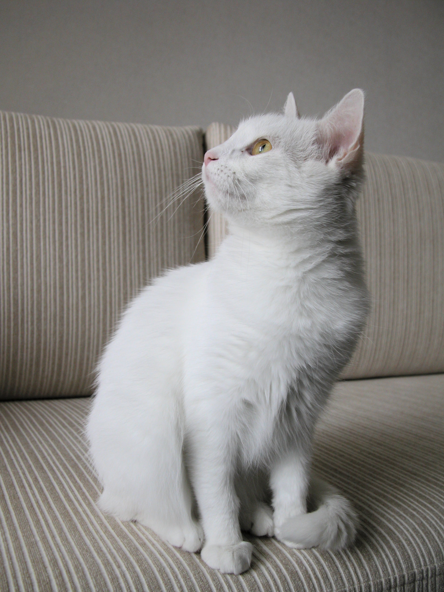

The animals: Cats
Marcos Castro Bello 1ºDAW
Top most beautiful cats:
Norwegian Forest
Russian Blue
Abyssinian
Types of Cat Food
- Dry cat food: This is often the cheapest choice available for your cat. It has a very long shelf life, and one bag of food will last several months.
- Semi-moist food: This is not dissimilar to dry food in terms of appearance, but rather than crunchy it is chewy.
- Wet food: This would usually be your cat’s first choice of food. Easy to eat and very tasty, a cat would happily eat their way through tins and tins (or packets and packets) of wet food if given half a chance.
A normal Cat:

URLs:
Go to top
Go to IES San Clemente web site
Go to free stock animals photos